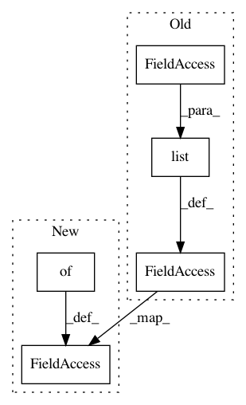

3b28dd8a53ac4c736f44f9dc89df279e70b4f07c,pixyz/distributions/flow_distribution.py,TransformedDistribution,__init__,#TransformedDistribution#,21
Before Change
self.flow = flow // FlowList
self._flow_input_var = list(prior.var)
self._flow_output_var = list(flow_output_var)
@property
def distribution_name(self):
return "TransformedDistribution"
After Change
self.flow = flow // FlowList
self._flow_input_var = list(prior.var)
self.stored_x = {}
@property
def distribution_name(self):
return "TransformedDistribution"
In pattern: SUPERPATTERN
Frequency: 3
Non-data size: 5
Instances
Project Name: masa-su/pixyz
Commit Name: 3b28dd8a53ac4c736f44f9dc89df279e70b4f07c
Time: 2020-09-29
Author: kaneko@weblab.t.u-tokyo.ac.jp
File Name: pixyz/distributions/flow_distribution.py
Class Name: TransformedDistribution
Method Name: __init__
Project Name: masa-su/pixyz
Commit Name: 6b79625871c1668a847fcc82ac1e1a220cd25968
Time: 2020-09-13
Author: kaneko@weblab.t.u-tokyo.ac.jp
File Name: pixyz/distributions/flow_distribution.py
Class Name: TransformedDistribution
Method Name: __init__
Project Name: masa-su/pixyz
Commit Name: 031e7d514c9f43ef4cf3e9847ce5883c6adc3439
Time: 2020-10-12
Author: kaneko@weblab.t.u-tokyo.ac.jp
File Name: pixyz/distributions/flow_distribution.py
Class Name: TransformedDistribution
Method Name: __init__